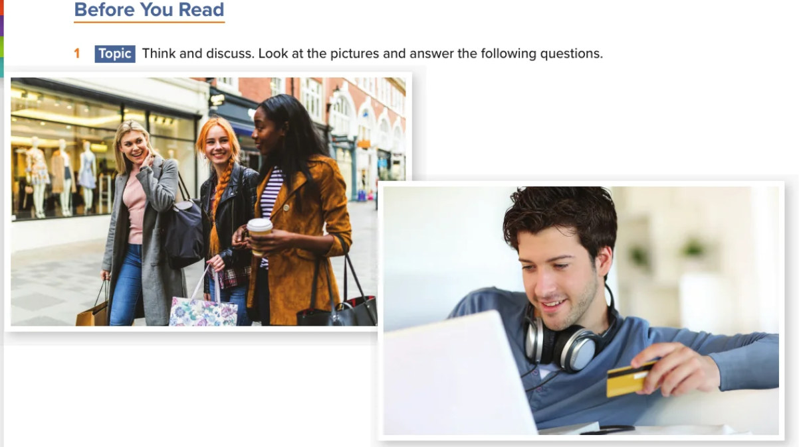
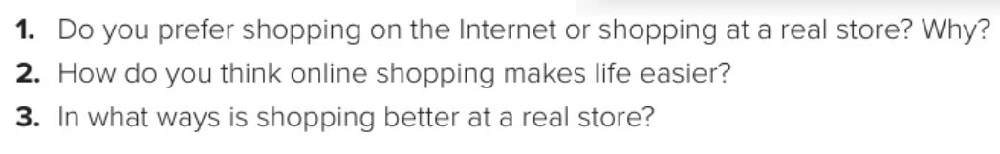
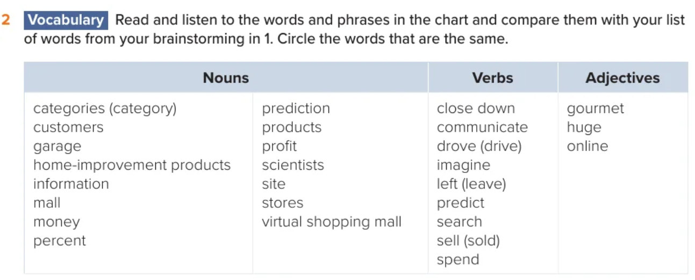
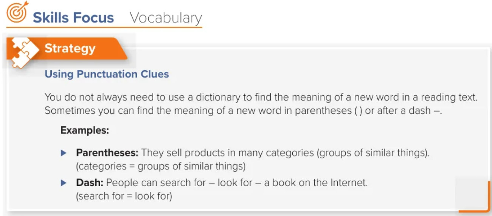
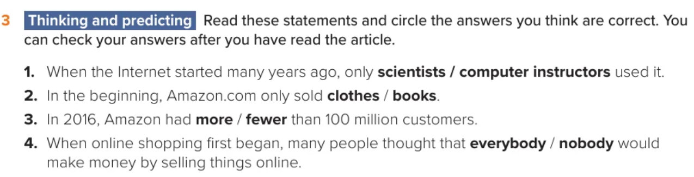
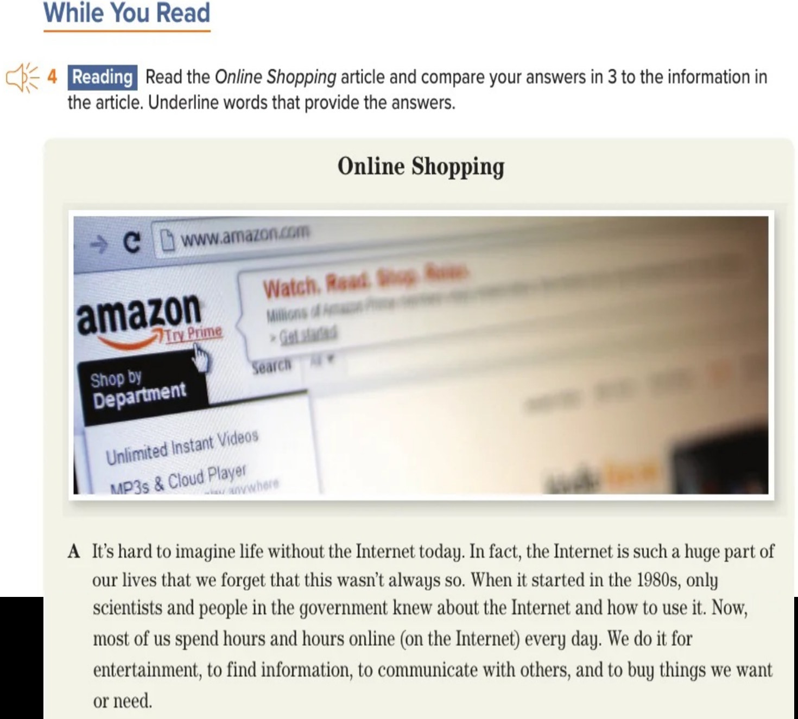

Today I will learn to…
- Discuss shopping choices and make predictions before reading.
- Listen to and identify new vocabulary; use parentheses and dashes to work out word meanings.
- Read paragraph A to find its main topic and explain new words using clues.
📖 Open ALEF Pathway → Library. Read silently for 10 minutes while your teacher prepares the board.
Before you read
Look at the pictures. Discuss the textbook questions with a partner; more than one opinion can be right.


Share a reason and respond respectfully to another opinion.
Words for the reading
First, brainstorm shopping words. Then play the audio, follow the chart, and highlight any word you do not understand. Circle words that match your brainstorm.

Find meanings using punctuation
A word’s meaning may appear in parentheses ( ) or after a dash —. Look closely at the words beside the punctuation.

Try three new examples. Discuss before revealing each answer.
What do you predict?
Circle the option you think is correct for each textbook statement. Explain one prediction. We will check with the article after reading.

Read paragraph A together
Follow the printed paragraph as one student reads with the teacher. Point to the clue for online, then say the main topic in one sentence.

1. Which word has a meaning in parentheses?
2. What did only scientists and government workers know in the 1980s?
3. What is paragraph A mostly about?
Choose the meaning—and the clue
Read each sentence. Pick a meaning, then tell the class whether parentheses or a dash helped you.
Exit check: “I found the meaning of ___ by looking after the parentheses / dash.”